Muay Thai
Saenchai
Um dos atletas mais tecnicos e criativos da historia do Muay Thai, admirado pela movimentacao, controle e genialidade no ringue.
Momentos marcantes com nomes historicos das artes marciais e lembrancas das viagens para a Thailandia, berco do Muay Thai.
Uma area para reunir fotos do Mestre Sandro ao lado de referencias mundiais das artes marciais.
Um dos atletas mais tecnicos e criativos da historia do Muay Thai, admirado pela movimentacao, controle e genialidade no ringue.
Icone mundial que levou o Muay Thai para uma audiencia global, famoso por explosao, condicionamento absurdo e chutes devastadores.
Lenda brasileira do MMA, simbolo de intensidade e coragem, marcado por batalhas historicas e por um estilo agressivo que fez escola.
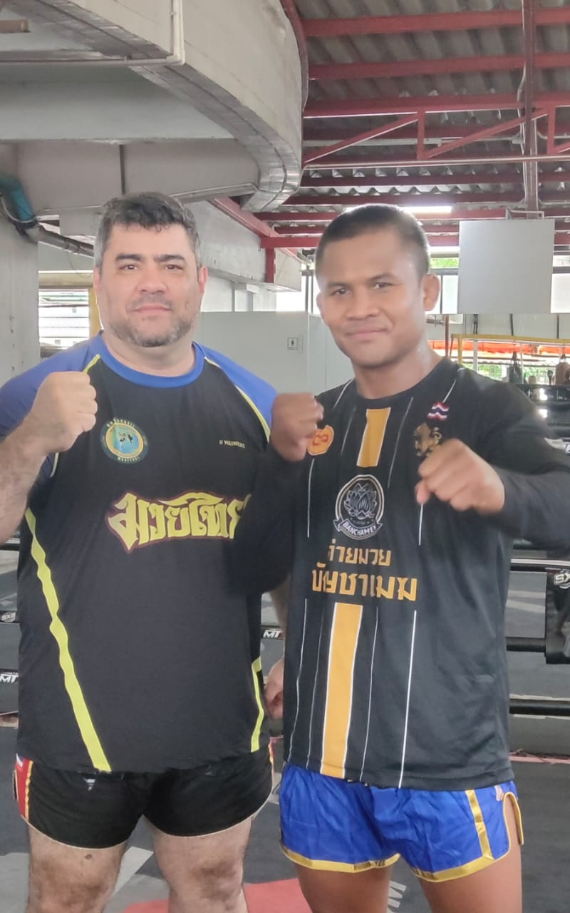
Foto recebida para a area de encontros importantes da trajetoria do Mestre Sandro.

Momento de cumprimento e intercambio dentro da cultura marcial.
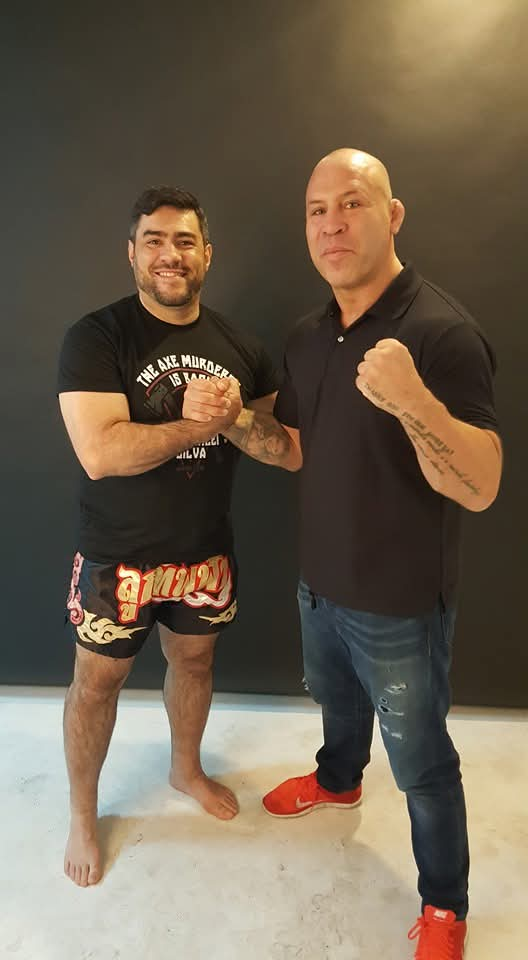
Registro para preservar momentos com nomes importantes das lutas.
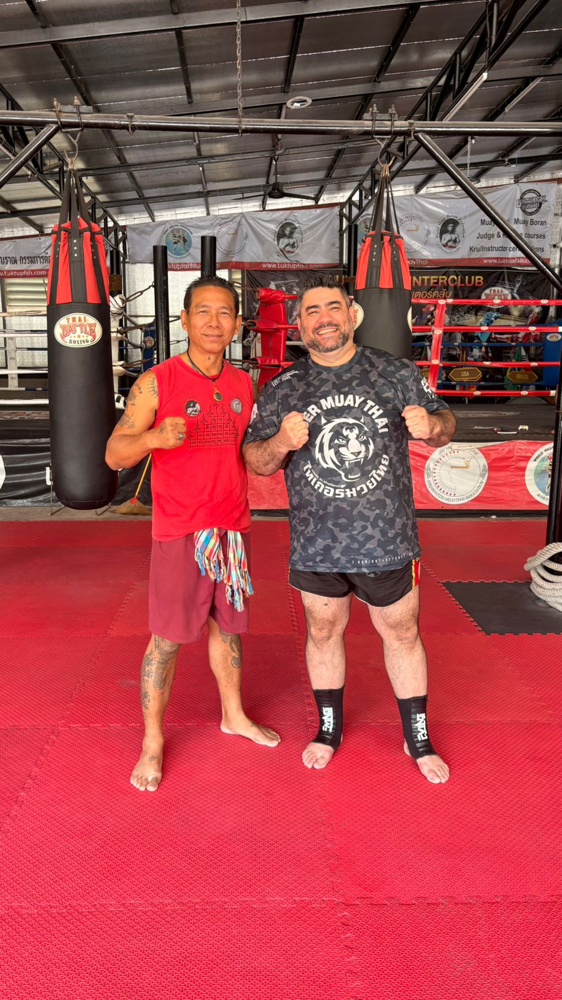
Vivencias e conexoes construidas atraves do treino.
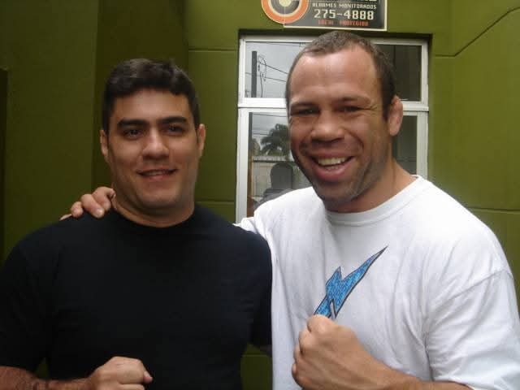
Registro de encontro ligado a grandes nomes das artes marciais.
Fotos dos treinos, templos, academias e experiencias vividas no pais onde o Muay Thai nasceu.
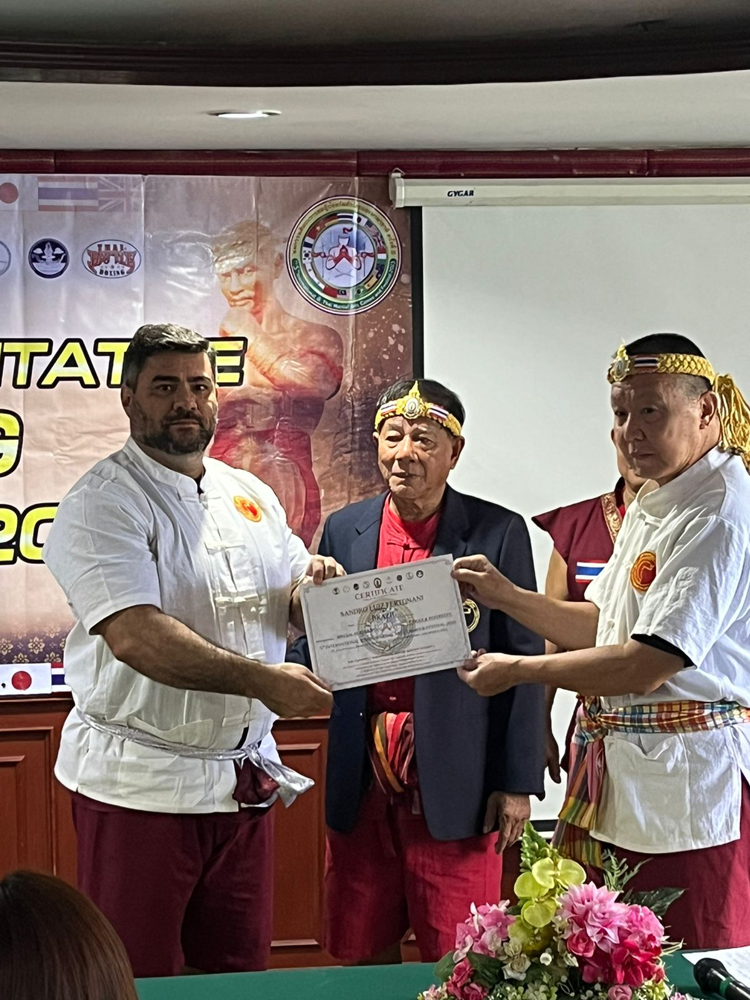
Espaco principal para fotos da viagem, treinos em camps tailandeses e momentos de aprendizado direto na fonte.
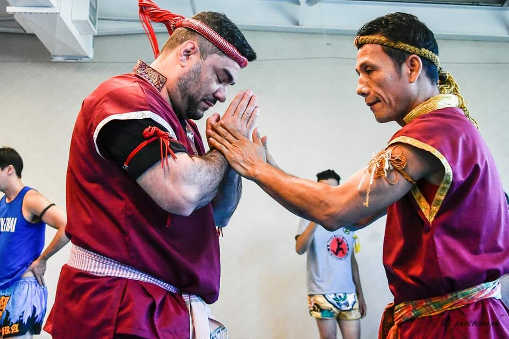
Momentos que conectam treino, cultura e respeito dentro do Muay Thai.
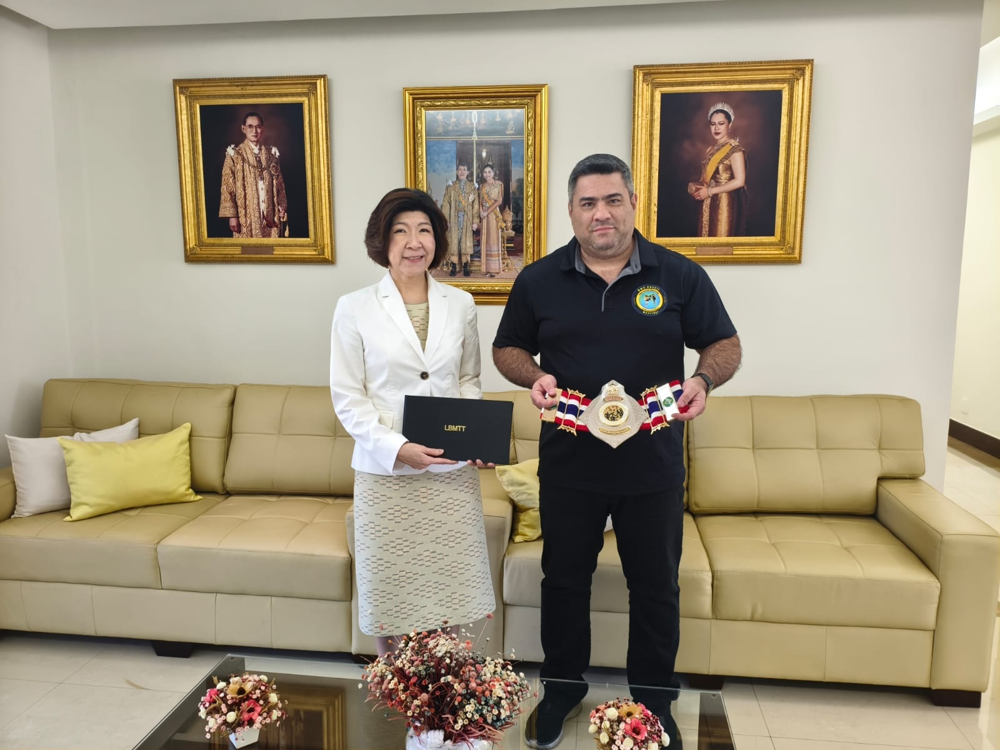
Registros de viagens, visitas e experiencias que aproximam o treino da cultura tailandesa.
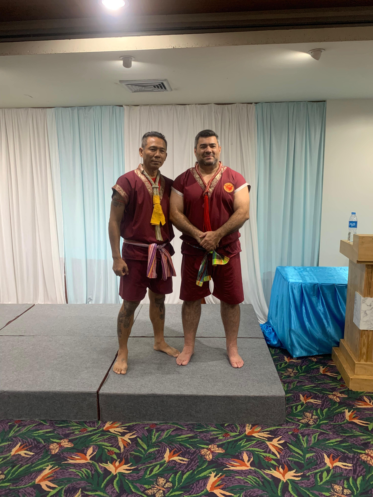
Fotos de cerimonias, treinos e momentos especiais vividos durante a viagem.
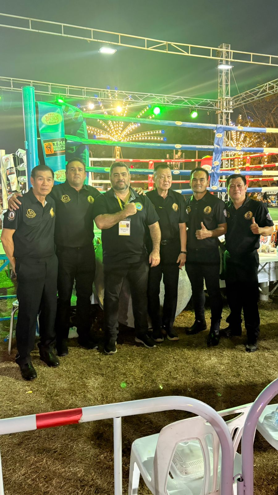
Registros da equipe em eventos, encontros e compromissos fora do Brasil.
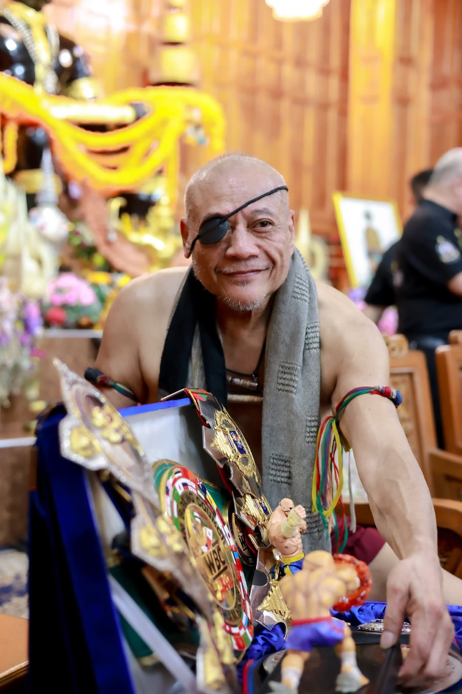
Imagens que valorizam mestres, rituais e a historia por tras do Muay Thai.
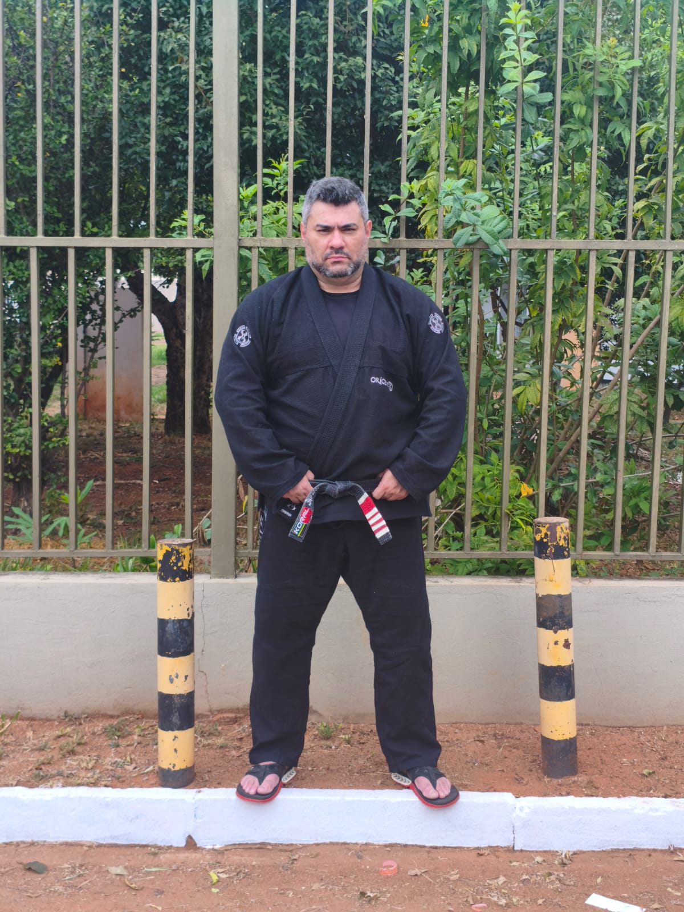
Momentos fora do treino que tambem fazem parte da experiencia na Thailandia.

Fotos em academias e ambientes de preparacao ligados ao Muay Thai tradicional.